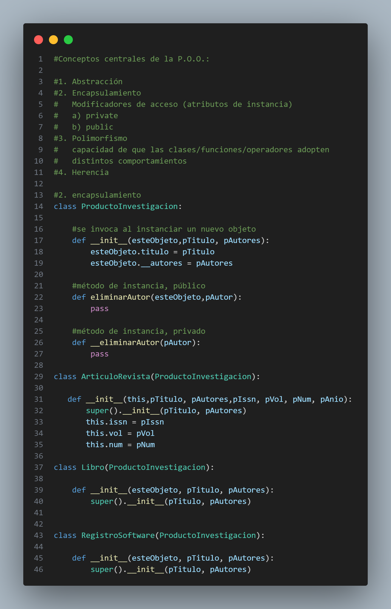

En esta segunda etapa, quiero resaltar especialmente el uso de la programación orientada a objetos en Python.
Además, exploramos nuevos patrones de diseño, como el adaptador (adapter) y el observador (observer).
-
Seguimos con Python y un tema importante, La programacion orientada a objetos, podemos decir que:
Abstracción:
Al crear una clase con métodos y atributos, nos sumergimos en el concepto de abstracción. Este enfoque nos permite trabajar con la esencia fundamental de los objetos y sus interacciones.Encapsulamiento:
En el ámbito de las clases, el encapsulamiento se manifiesta al tener atributos tanto públicos como privados. Esto permite controlar el acceso a ciertos datos y funcionalidades, brindando una capa adicional de seguridad y modularidad.Polimorfismo:
La capacidad de que clases, funciones y operadores adopten diversos comportamientos es lo que define al polimorfismo. Esta característica facilita la flexibilidad del código al permitir que entidades similares compartan nombres pero ejecuten acciones distintas. Además, el polimorfismo se puede sobrecargar para adaptarse a diferentes contextos y mostrar datos de manera específica.Herencia
La herencia es una herramienta fundamental para generalizar clases, es decir, identificar y definir atributos comunes entre dos o más clases. Este proceso facilita la creación de jerarquías y la reutilización de código al aprovechar las características de una clase base en otras clases derivadas. 
Ejemplo de Herencia
-
Los patrones de diseño son soluciones probadas para problemas comunes en el desarrollo de software. Ofrecen modelos reutilizables que encapsulan las mejores prácticas de diseño, mejorando la eficiencia y la mantenibilidad del código. Estos patrones abordan desafíos específicos, facilitando la creación de sistemas más flexibles y escalables. Se dividen en categorías como creacionales, estructurales y de comportamiento, cada una destinada a resolver problemas de diseño particulares.
Patrones Creacionales
Los patrones creacionales son un tipo de patrón de diseño en ingeniería de software que se centran en la creación de objetos de manera eficiente. Estos patrones proporcionan mecanismos para instanciar objetos de varias maneras, asegurando que la creación de estos objetos sea flexible, eficiente y desacoplada del sistema.
Singleton
Garantiza que una clase tenga una única instancia y proporciona un punto de acceso global a esa instancia.
Patrones Estructurales
Los patrones estructurales son un tipo de patrón de diseño en ingeniería de software que se centran en la composición de clases y objetos para formar estructuras más grandes y complejas. Estos patrones ayudan a definir cómo las clases y los objetos interactúan y se organizan para formar sistemas más extensos y adaptables.
Adapter
Permite que la interfaz de una clase existente se adapte para ser utilizada por otra interfaz, facilitando la interoperabilidad entre sistemas incompatibles.
Patrones de Comportamiento
Los patrones de comportamiento son un tipo de patrón de diseño en ingeniería de software que se centran en cómo objetos interactúan y comunican entre sí para lograr un comportamiento flexible y eficiente en un sistema. Estos patrones se ocupan de algoritmos, asignación de responsabilidades y colaboración entre objetos.
Strategy
Define una familia de algoritmos, encapsula cada uno y los hace intercambiables. Permite que el algoritmo varíe independientemente de los clientes que lo utilizan.